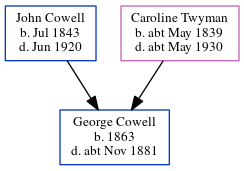

George William Cowell 1863 - c1881
[ Home ] | [ Calendar ] | [ Surnames Index ] | [ Errors ] | [ Family History ]An agricultural labourer and the child of John Cowell (a labourer) and Caroline Twyman, George Cowell, the first cousin three-times-removed on the mother's side of Nigel Horne, was born in Wickhambreaux, Kent, England in 18631,2,3,4 and baptised there on 26 Apr 1863.
During his life, he was living on Orchard Terrace, New Hythe Road, East Malling, Kent, England in 18711, on 2 Apr 18716, in 18812 (the same place as his parents were living on 3 Apr 1881) and on 3 Apr 18815.
He died c. Nov 1881 in Malling, Kent, England3 and was buried at Holy Trinity, New Hythe, Kent on 11 Dec 1881.
Parents
- John was born in Jul 1843
- Caroline was born c. May 1839
Citations
- 1871 England Census Online publication - Provo, UT, USA: The Generations Network, Inc., 2004.Original data - Census Returns of England and Wales, 1871. Kew, Surrey, England: The National Archives of the UK (TNA): Public Record Office (PRO), 1871. Data imaged from the National (Relation to Head of House: Son)
- 1881 England Census Online publication - Provo, UT, USA: The Generations Network, Inc., 2004. 1881 British Isles Census Index provided by The Church of Jesus Christ of Latter-day Saints © Copyright 1999 Intellectual Reserve, Inc. All rights reserved. All use is subject to the (Relation to Head of House: Son)
- England & Wales deaths 1837-2007 - Findmypast
- England & Wales, FreeBMD Birth Index, 1837-1915 Online publication - Provo, UT, USA: The Generations Network, Inc., 2006.Original data - General Register Office. England and Wales Civil Registration Indexes. London, England: General Register Office. © Crown copyright. Published by permission of the Cont
- 1881 England, Wales & Scotland Census - Findmypast (was age 18 and the son of the head of the household)
- 1871 England, Wales & Scotland Census - Findmypast (was age 8 and the son of the head of the household)
Media
England & Wales deaths 1837-2007 - BMD/D/1881/4/AZ/000071/239
England & Wales births 1837-2006 - BMD/B/1863/2/AZ/000267/012
1881 England, Wales & Scotland Census - GBC/1881/0004492701
1871 England, Wales & Scotland Census - GBC/1871/0013963535
Family Tree
Map
Generated by ged2site. Last updated on Jul 3, 2024
Known Issues
Date of baptism (26 Apr 1863) before date of birth (1863)
Burial date (11 Dec 1881) has no citations
Location for 2 Apr 1871 (Orchard Terrace, New Hythe Road, East Malling, Kent, England) differs from mother's (London Road, Ditton, Kent, England)
Date of residence (1871) differs from mother's in same year (2 Apr 1871)
1871: Not living with either parent in childhood when aged 8
Location for 2 Apr 1871 (Orchard Terrace, New Hythe Road, East Malling, Kent, England) differs from mother's (London Road, Ditton, Kent, England)
2 Apr 1871: Not living with either parent in childhood when aged 8